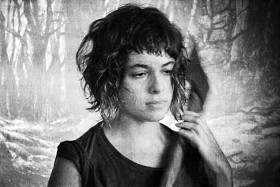

Favula
Raúl Perrone – Argentina 2014
80 min – HD – silent
Sc+E: Raúl Perrone – DoP: Raúl Perrone, Hernan Sorna – P: Pablo Ratto – With Sergio Boggio, Sara Navarro, Nix Noise
“Hypnotic” is the best word to describe FAVULA, which comes with a recommendation from none other than Apichatpong Weerasethakul. Somewhat of a secret outside of his native Argentina, Perrone has made more than 30 movies, and in recent years has reinvented his cinema, by looking back to the past, and in doing so pointing to the future. Standing apart from any other film made this year, with its magical handmade aesthetic, FAVULA recalls Méliès, or silent Fritz Lang, but at the same time evokes recent silent, stage-bound aesthetics like Raya Martin’s INDEPENDENCIA. Loosely based on an African fable, and shot employing rear-projections techniques, FAVULA’s simple events take place mostly in an isolated house and a nearby jungle: a marginal family’s life is interrupted by the arrival of a teenaged girl. On top of the minimalist, pulsating images, Perrone layers a maximalist soundtrack that encompasses both the sounds of the jungle and non-diegetic music (indelible contemporary songs that appeared in his last work, the cumbia punk opera P3ND3JO5). The result is a wholly unique, mythical universe of danger, passion and magic. – Mark Peranson
wednesday 14 oct 10.30 pm werkstattkino
Raúl Perrone was born in Ituzaingó, Buenos Aires. He has always lived and worked in Argentina. His filmography is characterized for its incorruptible coherence, putting him on the spot as one of the main directors in Argentina, always working in an absolutely independent way, turning him in an eludible mentor for the new generation of Argentinian directors.
Films (selection) Peluca y Marisita 2002 – Nosotrosdos 2006, La navidad de Ofelia y Gaván and Canada 2007 – 180 Grados 2009 – Los actos cotidianos 2010 – P3nd3jo5 2013 – Favula 2014